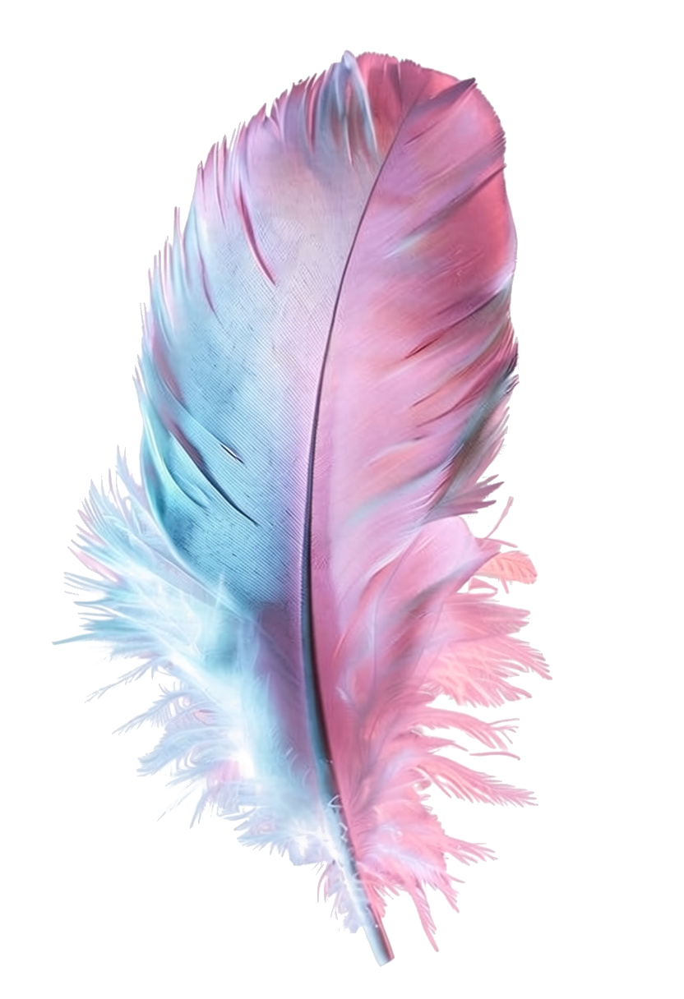

Comprendre l’art-thérapie
Comprendre
Le processus de création sert de médiation. Il ne s’agit pas de produire une œuvre parfaite, mais de disposer d’un autre langage.
La couleur, la matière et la création offrent parfois un autre chemin pour exprimer ce qui est difficile à dire.
On pousse la porte d’une art-thérapeute sans vraiment connaître l’art-thérapie. On cherche souvent un lieu où ce que l’on vit puisse être accueilli autrement que par les mots.

Entrer dans l’atelierIl n’existe pas une seule manière d’entrer dans l’accompagnement. Choisissez simplement ce qui vous parle aujourd’hui.
Une boîte contient, protège et révèle.
Le processus de création sert de médiation. Il ne s’agit pas de produire une œuvre parfaite, mais de disposer d’un autre langage.
Écoute, respect du rythme, absence de jugement, confidentialité et liberté de partager.
Art-Thérapeute et Médiatrice Artistique certifiée RNCP niveau 6, formée au Profac d’Arles et membre de la LPAT.
Quelques mots suffisent. Vous n’avez pas besoin de raconter toute votre histoire ni de transmettre un diagnostic.
La peinture donne une présence, une matière et un espace à ce qui ne trouve pas encore sa place dans les mots.
Un temps pour ralentir, traverser une période de changement ou retrouver un espace personnel.
Un premier échange pour évoquer ce que vit votre enfant et vérifier si cette approche peut lui convenir.
Un espace à soi, sans évaluation ni attente de performance, pour s’exprimer autrement.
Des interventions construites avec les équipes éducatives ou thérapeutiques dans un cadre défini ensemble.
Je suis Stéphanie Pointud, Art-Thérapeute et Médiatrice Artistique, certifiée RNCP niveau 6, formée au Profac d’Arles et membre de la LPAT.
Ma pratique donne une place essentielle à l’écoute, à la bienveillance, au respect du rythme et à la liberté d’expression.
Je propose un accompagnement par l’art et la médiation artistique aux enfants, adolescents et adultes, à Belfort et Delle (Territoire de Belfort), ainsi qu’à Porrentruy, Delémont et Bienne (Jura suisse).
L’art-thérapie utilise le processus de création comme médiation dans un cadre d’accompagnement. Elle permet d’explorer et d’exprimer autrement ce qui peut être difficile à formuler.
Créer un cadre clair, respectueux et sans jugement, où votre rythme reste la référence.
Découvrir des couleurs, des matières et des gestes sans compétence artistique attendue.
Donner une forme personnelle à ce qui se présente, sans modèle à reproduire.
Observer progressivement ce que l’expérience créative permet d’exprimer ou de transformer.
Non. Aucune compétence artistique n’est attendue. Le processus et l’expérience vécue comptent davantage que le résultat esthétique.
Non. Vous restez libre de ce que vous souhaitez montrer, partager ou garder pour vous.
Ce premier échange permet de poser vos questions, d’évoquer votre demande et de comprendre le cadre proposé. Il ne vous engage pas dans un accompagnement.
L’accompagnement peut concerner des enfants, des adolescents, des adultes et des institutions. La pertinence de la démarche est appréciée lors du premier échange.
La peinture occupe une place importante dans la pratique de Stéphanie Pointud. Les supports et modalités sont adaptés au cadre de l’accompagnement.
La confidentialité fait partie du cadre annoncé. Ses modalités concrètes sont expliquées au début de l’accompagnement.
Non. L’art-thérapie ne remplace pas un suivi médical, psychiatrique ou psychologique lorsqu’il est nécessaire.
Vous pouvez utiliser le formulaire ci-dessous ou les coordonnées professionnelles qui seront indiquées avant la mise en ligne du site.
Un premier contact ne vous engage pas. Il permet de poser vos questions et de vérifier si l’approche proposée correspond à votre situation.
Quelques mots suffisent pour établir le contact.
Stéphanie vous répond selon le moyen indiqué.
Votre demande peut être évoquée sans devoir tout raconter.
Les modalités sont présentées clairement.
Vous choisissez librement si vous souhaitez poursuivre.
Art-Thérapeute et Médiatrice Artistique
Belfort et alentours